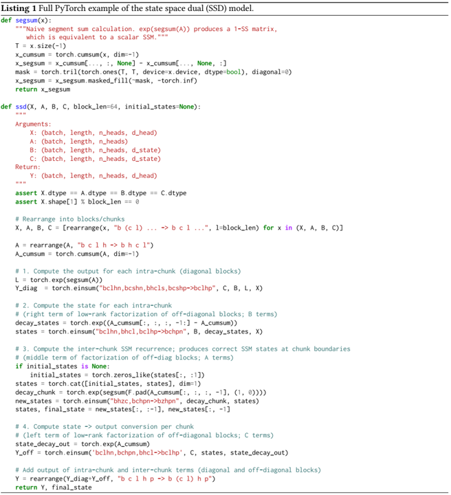
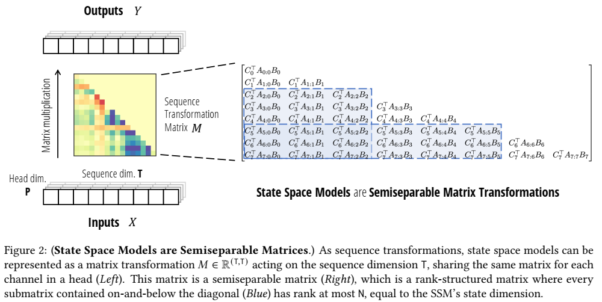

论文阅读三十：Mamba2：Transformers are SSMs
摘要
虽然Transformers已经成为深度学习在语言建模中成功的主要架构，状态空间模型（SSMs），如Mamba，近期被证明在小到中尺寸匹配或超越Transformers。我们证明，这些模型系列实际上是非常紧密相关的，并在SSMs和注意力变体之间开发一个丰富的理论联系框架，通过对一类研究良好的结构化半可分矩阵的各种分解来联系。我们的状态空间对偶性（SSD）框架允许我们设计新的架构（Mamba-2），其核心层是Mamba的选择性SSM的优化，速度快2-8倍，同时继续在语言建模中与Transformers具有可比性。 论文地址
引言
Transformers，尤其是解码模型（如，GPT、Llama）以因果方式来处理输入序列，是当今深度学习成功的主要驱动。大量方法尝试近似核心注意力层来解决其效率问题（Tay等，2022），即训练中序列长度的二次缩放，以及自回归生成阶段序列长度线性大小的缓存需求。同时，一类候选的序列模型，结构化状态空间模型（SSMs）出现，训练期间序列长度线性缩放，生成阶段常量状态大小。它们在长范围任务上展示了强大性能（如，S4），并且最近匹配或超越Transformers在小到中等规模的语言建模任务上（如， Mamba）。然而，SSMs的发展似乎与社区改进Transformers的集体努力脱节，例如从理论上理解它们以及在现代硬件上优化它们。因此，相较于Transformers,SSMs更加难以理解和实验，并且像Transformers那样高效训练SSMs还存在来自算法和系统方面的挑战。
我们的主要目标是在结构化SSM和注意力变体之间建立丰富的理论联系。这将使我们能够将最初为Transformers开发的算法和系统优化转移到SSM，以实现构建性能优于Transformers的基础模型的目标，同时在序列长度上更有效地扩展。在这方面的一个里程碑式的贡献是线性注意力（LA）框架（Katharopoulos等人，2020），该框架通过展示二次核化注意力的“对偶形式”与特定线性递归之间的等价性，得出了自回归注意力与线性RNN之间的联系。这种对偶性允许新的能力，例如同时具有高效的可并行训练和高效的自回归推理的能力。本着同样的精神，本文提供了将线性复杂度SSM与二次复杂度形式联系起来的多个观点，以结合SSM和注意力的优势。
状态空间对偶性。我们的框架，连接结构化SSMs和注意力变体，我们称为结构化状态空间对偶性（SSD），通过结构化矩阵（具有次平方参数和乘法复杂度的矩阵）的抽象来实现。我们开发两种广泛的框架来表示序列模型，一种作为矩阵变化，另一种作为张量收缩，每种揭示对偶性的不同方面。我们的技术贡献包括：
-
我们证明状态空间模型和一类研究成熟的结构化矩阵，称为半可分矩阵（章节3），之间的等价性。这种联系处于我们框架的核心，为SSMs揭示了新的特性和算法。本文的中心信息是：计算状态空间模型的不同方法可以重构为结构化矩阵上的各种矩阵乘法算法。
-
我们显著改进了线性注意力理论（Katharopoulos等，2020）。我们首先通过张量收缩语言提供了其循环形式的有力证明，然后将其泛化到一类新的结构化掩码注意力（SMA）（章节4）。
-
我们连接SSMs和SMA，证明它们有大量交集，即彼此对偶，同时具有类似SSM的线性和类似注意力的二次形式（章节5）。我们还证明了任何具有快速循环形式的核注意方法都必须是SSM。

除了其内在的理论价值，我们的框架为理解和改进序列模型开辟了广泛的方向。
高效算法。 首先最重要的是，我们的框架为计算SSMs提出了新的高效和易于实现的算法（章节6）。我们引入新的SSD算法，基于半可分矩阵的块分解，利用线性SSM循环和二次对偶形式的两种优势，获得所有主要效率坐标（如，训练和推理计算、内存占用、和在当代硬件上利用矩阵乘法单元的能力）上的最优平衡。SSD的专用实现比Mamba的优化的选择性扫描实现快2-8倍，同时允许较大循环状态尺寸（Mamba大小的8倍或更高，几乎没有速度减缓）。SSD与softmax注意力（FlashAttention-2（Dao 2024））的优化实现具有很强的竞争力，在序列长度2K时超过，在序列长16K时速度快6倍。
架构设计。采用SSM等新架构的一个主要障碍是为Transformers量身定制的生态系统，例如用于大规模训练的硬件高效优化和并行技术。我们的框架允许使用注意力的既定惯例和技术来构建SSMs的架构设计选择，并进一步改进它们（第7节）。例如，我们将头部的模拟从多头注意力（MHA）引入SSM。我们证明了Mamba架构是一种多输入SSM（MIS），它类似于多值注意力（MVA），并比较了具有不同头部结构的Mamba的其他变体。
我们还使用这些想法对Mamba块进行了轻微的修改，这允许实现张量并行性（例如，以Megatron的风格（Shoeybi等人，2019））。主要思想包括引入分组值注意力（GVA）头部结构，并将所有与数据相关的投影移动到模块的开头并行发生。
经过修改的并行 Mamba 块与使用 SSD 作为内部 SSM 层相结合，产生了 Mamba-2 架构。我们在与 Mamba 相同的设置中研究了 Mamba-2 的 Chinchilla 缩放定律，发现它在困惑度和挂钟时间方面都帕累托地优于 Mamba 和 Transformer++。我们还在 Pile 上训练了一系列不同大小的 Mamba-2 模型，表明它在标准下游评估中与 Mamba 和开源 Transformers 相当或优于它们。例如，在 Pile 上用 300B 个 token 训练的具有 2.7B 参数的 Mamba-2 优于用相同数据集训练的 Mamba-2.8B、Pythia-2.8B 甚至 Pythia-6.9B。
系统优化。SSD框架将SSM和Transformers连接起来，使我们能够利用为Transformers开发的系统优化方面的大量工作（第8节）。
-
例如，Tensor Parallelism（TP）是一种重要的模型并行技术，通过在同一节点上的GPU上分割每一层来训练大型Transformer模型。我们将Mamba-2设计为TP友好型，将每个块的同步点数量减少了一半。
-
对于激活不适合一个设备的非常长的序列，已经为注意力块开发了序列并行性。我们描述了如何通过在设备之间传递循环状态来训练SSM，特别是Mamba-2的序列并行性。
-
为了使用不同长度的示例进行微调，以获得最佳效率，Transformer需要复杂的技术来删除填充标记，并对可变长度序列进行关注。我们展示了如何使用可变序列长度高效地训练Mamba-2，而不需要填充标记。
第9节在语言建模、训练效率和困难的多查询联想回忆任务上实证验证了Mamba-2（Arora，Eyuboglu，Zhang等人，2024）。最后，在第10节中，我们提供了一个扩展的相关工作，并讨论了我们的框架开辟的潜在研究方向。
模型代码和预先训练的检查点在 https://github.com/state-spaces/mamba 。
背景和概述
结构化状态空间模型
结构化空间模型（S4）是最近的一类用于深度学习的序列模型，与RNNs、CNNs和经典状态空间模型广泛相关。它们受特定的连续系统(1)启发，通过隐式潜在状态 映射1维序列 。
结构化SSMs的一般离散化形式采用方程（1）的形式。
其中， 。结构化SSMs之所以如此命名是因为控制时间动态的A矩阵必须是结构化的，为了高效计算这个序列到序列的变换使其足以用于深度神经网络。引入的原始结构是对角加低阶（DPLR）（Gu、Goel和Ré2022）和对角（Gu，Gupta等人2022；Gupta，Gu和Berant 2022；J.T.Smith、Warrington和Linderman 2023），这仍然是最受欢迎的结构。
本文章，我们使用术语状态空间模型（SSM）来表示结构化SSMs。这种SSMs有很多种，与连续时间、递归和卷积模型等神经序列模型的几个主要范式有着密切的联系（Gu，Johnson，Goel等人，2021）。我们在下面提供了一个简要的概述，并参考了之前的工作以了解更多的背景和细节（Gu 2023；Gu和Dao 2023）。
连续时间模型。原始的结构化SSMs源于方程 的连续时间映射，而不是直接在序列上操作。在连续时间的角度，方程（1a）中矩阵（A,B）不是直接学习的，而是从基础参数 以及参数化步长 生成。“连续参数0 ” 通过固定公式 和 变换到“离散参数” ，其中 对称为离散化规则。
备注 1 虽然我们的主要模型采用与之前工作相同的参数化和离散化步骤（详情请参阅 Gu 和 Dao (2023)），但为了简化说明和符号，我们在本文的其余部分省略了它。
循环模型。方程 (1) 和 (2) 采用递归形式，其输入 𝑥 是线性的。因此，结构化 SSM可以被视为循环神经网络 (RNN) 的类型，其中线性赋予它们额外的属性，并允许它们避免传统 RNN 的顺序计算。相反，尽管进行了这种简化，SSM 仍然可以完全表达为序列变换（在通用近似的意义上）（Kaul 2020；Orvieto 等人 2023；Shida Wang 和 Xue 2023）。
卷积模型。当 SSM 的动态随时间保持不变（如方程 (1) 所示）时，该模型称为线性时不变 (LTI)。在这种情况下，它们相当于卷积。因此，SSM 也可以被视为 CNN 的类型，但其中 (i) 卷积核通过 SSM 参数 (𝐴, 𝐵,𝐶) 隐式参数化，并且 (ii) 卷积核通常是全局的而不是局部的。相反，通过经典信号处理理论，所有足够良好的卷积都可以表示为 SSM。
通常，之前的LTI SSM会使用卷积模式进行高效的可并行训练（其中可以提前看到整个输入序列），并切换到循环模式（1）进行高效的自回归推理（其中可以一步一步地看到输入）。
形式 (2) 中参数 (𝐴, 𝐵,𝐶) 也可以随时间变化，在 Mamba 中被引入为选择性 SSM。与标准 LTI 公式 (1) 相比，该模型可以在每个时间步长上选择性地关注或忽略输入。事实证明，它在语言等信息密集型数据上的表现比 LTI SSM 好得多，尤其是当其状态大小 N 增加以允许更多信息容量时。但是，它只能以循环模式而不是卷积模式进行计算，并且需要谨慎的硬件感知实现才能高效。即便如此，它仍然不如 CNN 和 Transformers 等硬件友好型模型高效，因为它没有利用矩阵乘法单元，而现代加速器（如 GPU 和 TPU）专门用于矩阵乘法单元。
虽然时不变SSM与连续、递归和卷积序列模型密切相关，但它们与注意力没有直接关系。在本文中，我们展示了选择性SSM和注意力之间更深层次的关系，并利用它显著提高了SSM的训练速度，同时允许更大的状态大小N。
结构化SSM作为序列变换。
定义 2.1 我们使用术语序列变换来表示序列 上的参数化映射，其中， 和 是任意参数集合。T表示序列或时间轴；到第一维的下标索引，如， 。
序列变换（如SSM或自我注意）是深度序列模型的基石，它们被纳入神经网络架构（如Transformers）。（1）或（2）中的SSM是P=1的序列变换；通过简单地在这个维度上进行广播（换句话说，将输入视为P个独立序列并对每个序列应用SSM），可以将其推广为P>1。可以将P视为头部维度，我们将在第7节中详细介绍。
定义 2.2 我们定义SSM算子 为由方程（2）定义的序列变换 。
在SSM中，N维是一个称为状态大小或状态维度的自由参数。我们也称之为状态扩展因子，因为它将输入/输出的大小扩展了𝑁，这对这些模型的计算效率有影响。
最后，我们注意到，许多类型的序列变换，如注意力，可以表示为跨序列维度的单个矩阵乘法。
定义 2.3 我们称序列变换 为矩阵变换，如果它可以写为 的形式，其中， M是有参数 决定的矩阵。我们将序列变换等同于矩阵 𝑀，并且通常在上下文清晰时放弃对 𝜃 的依赖。
注意力
注意力广泛地表示一类计算，及分配分数到序列中每个位置对，允许每个元素“关注”其他元素。目前为止，最常见且重要的注意力变体时softmax 自注意力，定义为：
对于 。成对比较的机制（由实体化 引发）导致了特征性的注意力二次训练成本。
已经提出了各种注意力变体，但所有变体都具有这些注意力分数的底层核心，并具有各种近似值（Tay 等人，2022 年）。这项工作最重要的变体是线性注意力（Katharopoulos 等人，2020 年）。粗略地说，这类方法通过将 softmax 折叠成核特征图来丢弃它，并使用矩阵乘法的结合性重写 。此外，在因果（自回归）注意的重要情况下，它们表明，当因果掩码被纳入左侧时，即 ，其中 𝐿 是下三角 1 矩阵，则右侧可以扩展为递归。一些近期和同时进行的工作，例如 RetNet（Y. Sun 等人，2023 年）和 GateLoop（Katsch，2023 年）将其强化为 𝐿 的更一般形式（第 10 节）。在这项工作中，我们对结构化掩码注意的公式化将强烈推广这些想法。
结构化矩阵
一般的矩阵 需要 参数来表示， 以及 时间来执行基本运算，例如矩阵向量乘法。结构化矩阵是
（1）可以通过压缩表示，表示为次二次（理性情况下线性）参数，和
（2）通过在该压缩表示上直接运算，具有快速算法（最重要的矩阵乘法）。
也许最典型的结构化矩阵是稀疏矩阵和低秩矩阵。然而，还有许多其他类型，如 Toeplitz、Cauchy、Vandermonde 和 butterfly矩阵，它们都已用于机器学习以建立高效模型（Dao, Gu, et al. 2019；D. Fu et al. 2024；Gu, Gupta, et al. 2022；Thomas et al. 2018）。结构化矩阵是高效表示和算法的强大抽象。在这项工作中，我们将证明 SSM 等同于另一类以前未在深度学习中使用过的结构化矩阵，并利用这种联系来推导高效的方法和算法。
概述：结构化状态空间对偶性
虽然本文开发了一个更丰富的SSM、注意力和结构化矩阵之间的连接框架，但我们简要总结了主要方法，该方法实际上是相当独立和简单的算法。
循环（线性）形式。 状态空间对偶性（SSD）层可以定义为选择性SSM（2）的特例。可以利用SSM 作为递归（或并行扫描）的标准计算方法，其复杂度与序列长度成线性关系。与 Mamba 中使用的版本相比，SSD 有两个细微差别：
- 𝐴 上的结构进一步从对角线简化为标量乘以恒等结构。在这种情况下，每个 𝐴𝑡 也可以仅用一个标量来识别。
- 与 Mamba 中使用的 P = 1 相比，我们使用了更大的头部维度 P。通常选择 P = {64, 128}，这类似于现代 Transformers 的惯例。
与原始的选择性 SSM 相比，这些变化可以视为表达能力略有下降，但训练效率却显著提高。特别是，我们的新算法将允许在现代加速器上使用矩阵乘法单元。
对偶（二次）形式。SSD的对偶形式是与注意力密切相关的二次计算，定义为：
其中 是输入相关标量，界于 [0, 1] 之间。
与标准softmax注意力相比，有两个主要不同：
- 丢弃了softmax。
- 注意力矩阵逐个元素地与附加掩码矩阵𝐿相乘。
这两种变化都可以看作是解决普通注意力中的问题。例如，最近观察到 softmax 会导致注意力得分出现问题，例如“注意力下沉”现象（Darcet 等人，2024；Xiao 等人，2024）。更重要的是，掩码矩阵 𝐿 可以看作是用不同的数据相关位置掩码取代 Transformers 的启发式位置嵌入，该掩码控制着随时间传输的信息量。
更广泛地说，这种形式是我们在第4节中定义的线性注意力的结构化掩蔽注意力泛化的一个例子。
矩阵形式和SSD算法。SSD 的各种形式通过统一的矩阵表示连接起来，通过证明 SSM 具有矩阵变换形式 ，其中矩阵 依赖于 。具体来说，SSD 的对偶形式等同于与矩阵 𝑀 的简单（二次时间）乘法，而递归形式是一种利用 𝑀 中结构的特定有效（线性时间）算法。
除此之外，任何乘以 𝑀 的算法都可以应用。我们提出的硬件高效 SSD 算法（第 6 节）是一种新的结构化矩阵乘法方法，涉及 𝑀 的块分解，与纯线性或二次形式相比，它获得了更好的效率权衡。与一般的选择性 SSM（Gu 和 Dao 2023）相比，它相对简单且易于实现；清单 1 仅用几行代码就提供了完整的实现。

图1提供了本文中提出的概念之间关系的简单路线图。
符号
在本文中，我们更喜欢使用可以映射到代码的精确符号。
状态空间模型是结构化矩阵
本节探讨了状态空间模型作为序列变换的不同视角，并概述了此类映射的属性和算法。本节的主要结果是关于状态空间模型和一组称为半可分矩阵的结构化矩阵之间的等价性，这意味着新的效率结果（定理3.5和3.7）。
状态空间模型的矩阵变换形式
回想一下，我们对SSM的定义是通过（2）定义的参数化映射。我们的理论框架首先简单地将此变换写成矩阵乘法，映射向量 。
通过定义， 。通过归纳：
乘以 生成 并在 上向量化方程，我们推导SSM的矩阵变换形式。
半可分矩阵
方程式（3）中的𝑀是一类称为半可分矩阵的矩阵的特定表示。半可分矩阵是一种基本的矩阵结构。我们首先定义这些矩阵及其性质。
定义 3.1 如果下三角部分（即对角线或对角线下）包含的每个子矩阵的秩最多为N，则（下三角）矩阵𝑀是N-半可分的。我们称N为半可分矩阵的阶或秩。
定义 3.1 以及其他相关的 “可分离 ”结构形式（例如准可分离矩阵和半可分离矩阵的其他定义）有时被称为结构化秩矩阵（或秩结构化矩阵），因为它们的特征是其子矩阵的秩条件。半可分矩阵有许多结构化表示形式，包括分层半可分矩阵（HSS）、序列半可分矩阵（SSS）和布鲁哈特形式（Pernet and Storjohann2018）。我们将主要使用 SSS 形式。
顺序半可分（SSS）表示
定义 3.2 下三角矩阵 ，具有N-顺序半可分（SSS）表示，若它可以写为下式：
对于向量 和矩阵 。
我们定义算子SSS，使得 。
半可分矩阵的一个基本结果是，它们与具有 SSS 表示的矩阵完全等价。
一个方向可以用一个简单的构造性证明来推断。
引理 3.3 具有表示式（4）的N-SSS矩阵是N-半可分的。
证明。考虑任意非对角块 其中 。这有一个显式的秩N因子分解，如下所示：
方程（5）将广泛用于推导我们的序列模型快速算法。另一个方向在关于半可分矩阵的文献中已经确立。
命题 3.4 每个N-半可分矩阵具有一个N-SSS表示。
此外，请注意，虽然定义3.2涉及 参数用于表示（尤其是存储矩阵A），它其实可以压缩到 参数，这是渐近紧密的（Pernet、Signargout和Villard 2023）。因此，在本文的其余部分，我们将把结构化矩阵类（定义 3.1）和它的特定表示（定义 3.2）合并在一起；我们将始终使用此表示而不是其他候选表示。反过来，我们将使用 N-SS 来指代 SSS 形式的 N 半可分矩阵。
半可分矩阵是一种基本的矩阵结构，具有许多重要性质。它们与一般的递归密切相关，可以通过多种特征（例如定义3.1和3.2）来定义，这些特征揭示了它们之间的不同联系和有效的算法。我们在附录C.1中提到了它们的一些其他特性。
1-半可分矩阵：标量SSM递归
我们将挑出1-SS矩阵的特例。该例中， 和 是标量，且可以从SSS表示（4）中因子分解出来（我们还是使用小写来该例中的标量参数）：
由于对角矩阵容易处理（如，乘以对角矩阵等同于逐元素标量乘法），我们可以忽略这些项。因此，1-SS矩阵的基础表示是 或者：
1-SS矩阵的重要性在于它们等价于标量循环的最小形式，退化SSM的情况下，状态维度 N = 1，且 没有（B，C）投影。乘法 可以通过循环计算：
因此， 也也将1-SS矩阵的矩阵乘法称为标量SSM循环或者累积和（cumprodsum）（累计乘积和；累积和累加的推广）操作。作为递推的基本形式，1-SS 矩阵乘法是我们主要算法的重要组成部分。
我们强调，本文的中心主题之一是，序列模型上的许多算法可以简化为结构化矩阵乘法算法。1-SS矩阵举例说明了这种联系：有许多快速算法可以计算原始标量递归或cumprodsum算子，它们都等价于1-SS矩阵的不同结构分解。我们将附录B专门用于1-SS矩阵乘法的这些算法。
状态空间模型是半可分矩阵
回顾我们的SSM定义，通过定义2.1来定义，定义为参数映射。SSMs和半可分矩阵间的联系源于简单将这种变换写为矩阵乘法，映射向量 。
方程（3）直接建立状态空间模型和顺序半可分表示的联系，一般等价于半可分矩阵（引理3.3和命题3.4）。
定理 3.5 状态空间模型变换 ，其中状态大小为N，等价于以半可分矩阵表示的N-SS矩阵的矩阵乘法 。
换句话说，序列变换算子 SSM（定义 2.2）与矩阵构造算子 SSS（定义 3.2）不谋而合，我们可以交替使用它们（有时也用 SS 作为速记）。此外，结构化状态空间模型和顺序半可分矩阵的首字母缩写也是一样的，强调了两者的等价性！为了方便起见，我们可以交替使用 SSM（状态空间模型或半可分矩阵）、SSS（结构化状态空间或顺序半可分性）或 SS（状态空间或半可分性）等缩写，以明确地指代其中任何一个概念。不过，我们通常使用的惯例是 SSM 指状态空间模型，SS 指半可分性，SSS 指顺序半可分性。
图2 从序列变换的角度展示了作为半可分矩阵的状态空间模型。

通过结构化矩阵算法计算状态空间模型
定理3.5重要的原因是它允许我们将SSMs（以及其他序列模型）高效计算的问题简化到结构化矩阵乘法的高效算法。在第4节和第5节展示了SSM与其他序列模型的等价性后，我们简要概述了我们的主要新算法，并将其推迟到第6节。
如先前定义，半可分矩阵（如，秩结构化矩阵）是一类典型的结构化矩阵：
（i）它们拥有压缩表示，如SSS形式，仅有 而不是 参数。
（ii）它们拥有在压缩表示上之际运算的快速算法。
此外，参数化和矩阵乘法的成本在半可分割阶数上也很低。
命题3.6 （Pernet,Signargout,and Villard(2003)）。一个大小为T的N-SS矩阵可以用 个参数表示，且具有时间和空间为 的矩阵-向量乘法。
例如，1-SS矩阵说明了这种联系的本质。矩阵 由 T-1个参数 定义，可以通过按照标量循环（7）在 时间计算。
线性（循环）模式
命题3.6可以容易地在对角结构化SSMs（S4D）中看到，简单通过利用状态空间模型公式（2）并展开循环。我们在（8）中提供正式的张量收缩算法，其中维度S等于T。
这里， 定义为 1SS(A)，或者，换句话说，对于 ， 。该算法包括与（2）对应的三个步骤：
（i） 通过输入矩阵𝐵扩展输入𝑋（8a），
（ii）展开独立标量SSM递归（8b），以及
（iii）通过输出矩阵𝐶收缩隐藏状态𝐻（8c）。
注意，我们在步骤（8b）中使用了标量SSM和1-SS矩阵之间的等价性。
备注3 我们注意到 (8) 是 Mamba (S6) 模型的一个特例。然而，由于扩展的张量 𝑍 和 𝐻 的大小为 (T, P, N)，简单的实现速度很慢；Gu 和 Dao (2023) 引入了一种硬件感知实现，以避免实体化这些张量。
令人惊讶的是，定理 3.5 和命题 3.6 立即意味着所有 SSM 都具有与算法 (8) 相同的渐近效率。
定理 3.7 任意状态大小为N，在序列长度T上的状态空间模型（定义2.2）可以在时间 计算（不考虑潜在预处理）。
我们注意到，这一结果对于结构化 SSM 文献来说是新的。特别是，给定密集的非结构化 𝐴𝑡 矩阵，总表示本身似乎大小为 。因此，定理 3.7 陈述了一个非平凡的结果，即通过预处理步骤，即使是非结构化 SSM 也可以以最佳效率计算，其上限与由 𝐵 和 𝐶 的大小给出的下限 𝑂(TN) 相匹配。
备注 4 鉴于几乎所有 上的稠密矩阵在 C 上都是可对角化的，因此定理 3.7 可能并不太令人惊讶，这导致几乎所有稠密实 SSM 都等同于对角复数 SSM。这一事实解释了为什么对角 SSM 是最流行的结构化 SSM 形式（Gu, Gupta, et al. 2022；Gupta, Gu,and Berant 2022；J. T. Smith, Warrington, and Linderman 2023）。然而，定理 3.7 意味着更强的结果，所有实数 SSM（不仅仅是可对角化的 SSM）以及其他域（包括 C 本身）上的稠密 SSM。
在实践中，高效可计算的SSM仍然需要在𝐴上添加额外的结构，特别是为了避免昂贵的预处理步骤（这两个步骤都有N个额外的FLOP，并且涉及奇异值分解等硬件低效操作）。这些结构是过去结构化SSM（如S4（D）和Mamba）以及我们新算法研究的重点。特别是，当对𝐴施加稍强的结构时，我们将通过第6节中SSM矩阵 的块分解来设计非常硬件高效的算法。
二次（朴素）模式
我们注意到，从我们新的矩阵角度来看，还有另一种计算SSM的方法。矩阵SSM表示（3）的朴素计算涉及简单地具体化序列变换矩阵 。这是一个（T，T）矩阵，因此这种朴素算法将在序列长度上进行二次缩放。然而，当序列长度T较短时，由于常数因素和计算模式的硬件友好性（例如利用矩阵乘法），这实际上可能比线性算法更有效。事实上，对于结构化SSM的特定情况，这看起来非常类似于二次注意力计算（第5节）。
总结
许多序列模型被明确地激励或定义为矩阵序列变换，最著名的是Transformers，其中矩阵混合器是注意力矩阵。另一方面，RNN和SSM以前没有以这种方式描述过。通过提供状态空间模型的显式矩阵变换形式，我们揭示了理解和使用它们的新方法。从计算的角度来看，任何计算状态空间模型前向传递的方法都可以被视为半可分矩阵上的矩阵乘法算法。半可分矩阵透视为状态空间对偶（SSD）提供了一个透镜，其中对偶模式分别指线性时间半可分的矩阵乘法算法和二次时间朴素矩阵乘法。
此外，利用半可分矩阵的丰富结构可以带来更好的算法和更多的见解（例如第6节和附录B）。在附录C.1中，我们描述了半可分矩阵的一些附加性质。
结构化掩码注意力：用结构化矩阵推广线性注意力
在本节中，我们将从第一性原理重新审视线性注意力框架。本节的主要结果是基于张量收缩的线性注意的简单证明（命题4.1），以及我们在定义4.2中对结构化掩蔽注意的广义抽象。我们注意到，本节从与状态空间模型不同的方向推导出了主要的对偶结果，并且可以完全独立于第3节来阅读。
- 第4.1节建立了我们的注意力变体框架，特别关注内核注意力和掩码内核注意力。
- 第4.2节提供了我们的第一个主要注意力结果，通过张量收缩的镜头简单证明了线性注意力。
- 第4.3节定义了结构化掩蔽注意力，这是我们通过结构化矩阵对先前注意力变体的推广。
注意力框架
注意力
（单头）注意力的基本形式是三个向量序列上的映射 。
softmax注意力的最常见变体使用softmax激活𝑓=softmax来规范化G矩阵的行。
自注意力